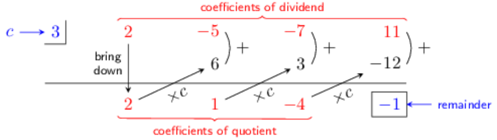

Synthetic Division: Dividing a Given Polynomial by \( x-c \)
Synthetic division is a fast way to divide a polynomial by a binomial of the form \( x-c \). The procedure is summarized below, from left to right, with the division of \( 2x^3-5x^2-7x+11 \) by \( x-3 \). Here, \( c=3 \).
(existing image)

(prototype animation)